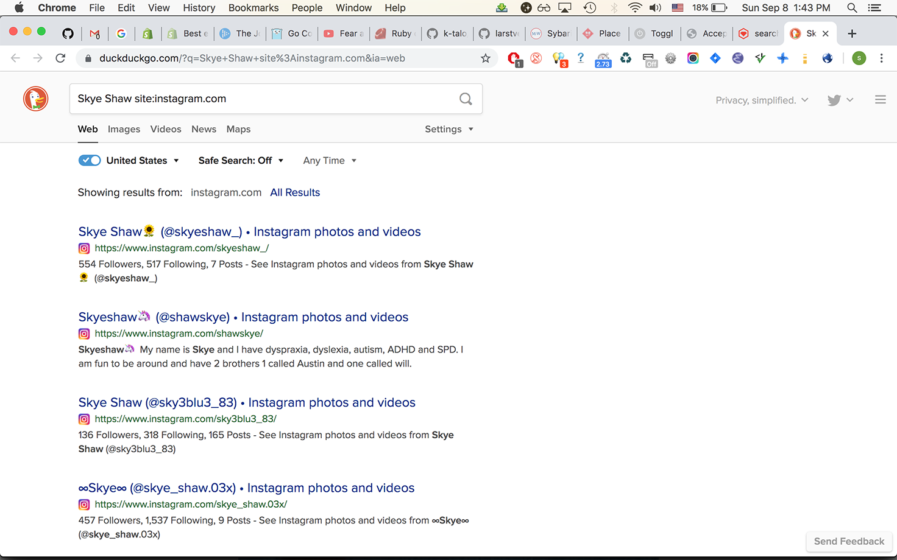

My (Mostly Ruby Related) Dotfiles and Other Stuff
Skye Shaw • github.com/sshaw
REPL
Yes, Pry is amaaaaaaaaaaazing
But, I just use…
irb!
Why?
Good functionality.
And I just haven't partitioned my config to work in .pryrc.
Configuration
Add Ruby code to $HOME/.irbrc; and elsewhere!
The Prompt
What I like to know:
- Ruby runtime (MRI, JRuby, etc…) and version
- Rails or Padrino project
- Non-development environment
Ruby runtime and version
# $HOME/.irbrc versions = { # RUBY_ENGINE => "a_prompt_string" "jruby" => "jirb", "macruby" => "macirb", "rbx" => "irbx", "ree" => "irbee" } target = Object.const_defined?("RUBY_ENGINE") ? RUBY_ENGINE : RUBY_PLATFORM irbname = versions.fetch(target, "irb") IRB.conf[:PROMPT][:CUSTOM] = { :PROMPT_I => prompt(irbname, RUBY_VERSION), # more stuff... } def prompt(name, version) sprintf "%s [%s] (%s)$ ", name, version, File.basename(Dir.pwd) end
Rails Project and Environment
custom = IRB.conf[:PROMPT][:CUSTOM] if defined?(Rails) name = "rails" name << "-#{Rails.env}" unless Rails.env.development? custom[:PROMPT_I] = prompt(name, Rails.version) elsif defined?(Padrino) name = "padrino" name << "-#{ENV["RACK_ENV"]}" unless ENV["RACK_ENV"] == "development" custom[:PROMPT_I] = prompt(name, Padrino.version) end IRB.conf[:PROMPT_MODE] = :CUSTOM
How it Looks
Ruby 2.4.0 in /tmp:
irb [2.4.0] (tmp)$
Rails 4.2.6 console, rails426-test project, production environment:
rails [4.2.6] (rails426-test-production)$
Ruby 1.9.3 under JRuby in jaxb2ruby project:
jirb [1.9.3] (jaxb2ruby)$
Shortcuts
Shorten frequently used things.
# $HOME/.irbrc def i(*m) include *m; end def j; jobs; end def q!; quit; end def r!; reload! end $E = ENV def r(lib) require lib.to_s end # And more!
require
Shortened to r:
irb [2.3.5] (ruby)$ r:csv => true irb [2.3.5] (ruby)$ r"itunes/store/transporter" => true
quit
Shortened to q!:
irb [2.3.5] (ruby)$ q! ~/code/ruby >
include
Shortened to i:
irb [2.3.5] (foo)$ i iTunes::Store::Transporter, REXML => Object irb [2.3.5] (foo)$ ITMSTransporter.new(options) => #<ITunes::Store::Transporter::ITMSTransporter:0x00007fc... > irb [2.3.5] (foo)$ VERSION => "0.2.0"
Dummy Instances
Often necessary for experimentation
Normally
irb [2.4.0] (ruby)$ h = { "a" => 1, "b" => 2, "c" => 999 }
=> {"a"=>1, "b"=>2, "c"=>999}
irb [2.4.0] (ruby)$ h.select(&:your_amazing_method)
Pry-Toys
Toy objects for Pry (Pry not required)
With Pry-Toys
# $HOME/.irbrc begin require "pry-toys" rescue LoadError # Don't prevent irb from starting end
irb [2.4.0] (ruby)$ h = Hash.toy
=> {"a"=>1, "b"=>2, "c"=>3, "d"=>4, "e"=>5, ... }
irb [2.4.0] (ruby)$ h.select(&:your_amazing_method)
irb [2.4.0] (ruby)$ Array.toy(2, Date) => [#<Date: 2018-05-28 ((2458267j,0s,0n),+0s,2299161j)>, ... ] irb [2.4.0] (ruby)$ String.toy(2) => "ppppp mmmmmmmmmm"
Formatting Output
Normally
rails [4.2.6] (rails426)$ User.first => #<User id: 9, name: "sshaw", age: 2131, created_at: ... >
Hirb
A mini view framework for console/irb
With Hirb
# $HOME/.irbrc begin require "hirb" extend Hirb::Console def hirb! Hirb::View.enabled? ? Hirb.disable : Hirb.enable end rescue LoadError end
rails [4.2.6] (rails426)$ hirb! # Enable Hirb => true rails [4.2.6] (rails426)$ User.first +----+-------+------+-------------------------+-------------------------+------+------------+------+ | id | name | age | created_at | updated_at | shit | listing_id | date | +----+-------+------+-------------------------+-------------------------+------+------------+------+ | 9 | sshaw | 2131 | 2017-08-05 20:38:45 UTC | 2017-08-05 20:38:45 UTC | 0 | | | +----+-------+------+-------------------------+-------------------------+------+------------+------+ 1 row in set
rails [4.2.6] (rails426)$ table Hash.toy(2) +---+---+ | 0 | 1 | +---+---+ | a | 1 | | b | 2 | +---+---+ 2 rows in set
rails [4.2.6] (rails426)$ hirb! # Disable Hirb => false rails [4.2.6] (rails426)$ User.first => #<User id: 9, name: "sshaw", age: 2131, created_at: ... >
pp
It's great:
irb [2.3.7] (rails426)$ pp Array.toy(3).map { Hash.toy(3) }
[{"a"=>1, "b"=>2, "c"=>3}, {"a"=>1, "b"=>2, "c"=>3}, ... ]
Well, if your data is big enough:
irb [2.3.7] (rails426)$ pp Array.toy(5).map { Hash.toy(5) }
[{"a"=>1, "b"=>2, "c"=>3, "d"=>4, "e"=>5},
{"a"=>1, "b"=>2, "c"=>3, "d"=>4, "e"=>5},
{"a"=>1, "b"=>2, "c"=>3, "d"=>4, "e"=>5},
{"a"=>1, "b"=>2, "c"=>3, "d"=>4, "e"=>5},
{"a"=>1, "b"=>2, "c"=>3, "d"=>4, "e"=>5}]
Awesome Print is Better
Pretty print with style in full color and with proper indentation
With Awesome Print
# $HOME/.irbrc begin require "ap" rescue LoadError # require "pp" done elsewhere alias ap pp end

Toggling Output
Avoid a wall of text:
rails [4.2.10] (foo)$ u = User.joins(:favorites).limit(10) DEBUG -- : User Load (9.3ms) SELECT `users`.* FROM `users` ... => #<ActiveRecord::Relation [#<User id: 1, email: "sshaw@example.com", created_at: "2010-03-08 02:28:29", updated_at: "2019-04-21 15:33:18", remember_token_expires_at: nil, admin: true, avatar: "settings.png", reviews_count: 13, username: "sshaw", about: "I made this thang...\r\n\r\nAKA The only place on the ...", favorites_count: 4, recipes_count: 1, shopping_lists_count: 2, shopify_domain: nil, shopify_token: nil, hide_profile: false, shopify_created_at: nil, shopify_trial_expired_email_sent_at: nil, subscription_price_per_month: nil, subscription_expires_at: nil, timezone: "US/Eastern", foo__pdf_allowed: false, default_foo__format: nil, custom_label_format_hack: "se", <snip wall of text>
echo!
Toggle irb result echoing:
# $HOME/.irbrc def echo! conf.echo = !conf.echo end
(Yes I know about exp; nil)
rails [4.2.10] (foo)$ echo! # Turn it off rails [4.2.10] (foo)$ u = User.joins(:favorites).limit(10) rails [4.2.10] (foo)$ p u.size 10 rails [4.2.10] (foo)$ echo! # Turn it on
Commands
# $HOME/.irbrc def self.method_missing(name, *args) # Commands we don't want to execute return super if [:x, :X].freeze.include?(name) system name.to_s, *args.map(&:to_s) $?.exitstatus == 127 ? super : $?.exitstatus end
Now we can run things:
irb [2.5.2] (foo)$ pwd /tmp/foo => 0 irb [2.5.2] (foo)$ ls dir1 dir2 foo.txt => 0
Arguments?
😬
irb [2.5.2] (foo)$ ls 'dir1' a.txt b.txt => 0
Interpolation
🆗
irb [2.5.2] (foo)$ x = "dir1"
=> "dir1"
irb [2.5.2] (foo)$ ls #{x}
dir1 dir2 foo.txt
=> 0
Read the Docs
irb [2.5.2] (foo)$ ri 'Array#each_with_object'
Array#each_with_object
(from ruby site)
Implementation from Enumerable
------------------------------------------------------------------------
enum.each_with_object(obj) { |(*args), memo_obj| ... } -> obj
enum.each_with_object(obj) -> an_enumerator
------------------------------------------------------------------------
<snip docs>
You Can Always Just…
Use your shell:
irb [2.5.2] (foo)$ bash /tmp/foo >ps p $PPID PID TT STAT TIME COMMAND 55754 s008 S 0:00.21 irb /tmp/foo >exit exit => 0 irb [2.5.2] (foo)$
Completion
Default IRB Completion
irb(main):012:0> true.<TAB> Display all 1866 possibilities? (y or n)
1866‽
irb(main):013:0> true.methods.count => 66
Another Example
irb(main):002:0> {a: 1}.c<TAB>
a:1}.call a:1}.clear
a:1}.chunk a:1}.clone
a:1}.chunk_while a:1}.collect
a:1}.class a:1}.collect_concat
a:1}.class_eval a:1}.comment
<snip list>
#call for Hash ‽
irb(main):002:0> {a: 1}.call
Traceback (most recent call last):
1: from (irb):4
NoMethodError (undefined method `call' for {:a=>1}:Hash)
‼️
Bond
Easy custom autocompletion for arguments, methods and beyond.
With Bond
true.__id__ true.inspect true.object_id true.__send__ true.instance_eval true.pretty_inspect <snip list>
It's accurate!
No #call:
irb(main):005:0> {a: 123}.c<TAB>
a:1}.chunk a:1}.clear
a:1}.chunk_while a:1}.clone
a:1}.class a:1}.collect
a:1}.class_eval a:1}.collect_concat
<snip list>
Hash Key Expansion
irb [2.4.0] (tmp)$ h = { :a => 1, :b => 2, :bee => "999" }
=> {:a=>1, :b=>2, :bee=>"999"}
irb [2.4.0] (tmp)$ h[:
h[:a h[:b h[:bee
irb [2.4.0] (tmp)$ h[:b
h[:b h[:bee
.bondrc
Defaults are good, I don't have much:
complete(:method => "r", :action => "require") # A complete(:method => "cd", :search => :files) # B
A) Treat my r alias like Bond treats require:
irb(main):005:0> r "net/<TAB> net/ftp.rb net/http/ net/imap.rb net/protocol.rb net/http.rb net/https.rb net/pop.rb net/smtp.rb
B) cd (defined in my .irbrc) gets shell-like completion:
irb(main):015:0> cd dir1/ dir2/ foo.txt irb(main):016:0> cd "dir dir1/ dir2/ irb(main):017:0> cd "dir1" => "/private/tmp/t/dir1" irb(main):018:0> Dir.pwd => "/private/tmp/t/dir1"
Per Project History and Config
# $HOME/.irbrc local = File.join(Dir.pwd, ".irbrc") load local if local != __FILE__ && File.exist?(local) local = File.join(Dir.pwd, ".irb-history") IRB.conf[:HISTORY_FILE] = local if File.exist?(local)
A Rails Project's .irbrc
def sshaw User.find_by_email "sshaw@example.com" end def shopify(&block) ShopifyAPI::Session.temp(ENV["CTI_SHOPIFY_DOMAIN"], ENV["CTI_SHOPIFY_SECRET"], &block) end
rails [4.2.10] (foo)$ shopify { ShopifyAPI::Product.find(12312312330) }
rails [4.2.10] (foo)$ sshaw.update!(:email => "test@example.com")
rails [4.2.10] (foo)$ UserMailer.a_notification(sshaw).deliver_now
Bash Like History Ignoring
BASH(1):
The HISTCONTROL and HISTIGNORE variables may be set to cause the shell to save only a subset of the commands entered.
Implementation
Subclass IRB::ReadlineInputMethod and set IRB.conf[:SCRIPT]
# $HOME/.irbrc class HistoryInputMethod < IRB::ReadlineInputMethod def gets l = super if ignore_settings.include?("ignoreboth") || ignore_settings.include?("ignorespace") HISTORY.pop and return l if HISTORY.size > 0 && HISTORY[-1].start_with?(" ") end if ignore_settings.include?("ignoreboth") || ignore_settings.include?("ignoredups") HISTORY.pop and return l if HISTORY.size > 1 && HISTORY[-1] == HISTORY[-2] end HISTORY.pop if HISTORY.size > 0 && ignore_patterns.any? { |pat| HISTORY[-1] =~ pat } l end
# HistoryInputMethod private def ignore_patterns @ignore_patterns ||= ENV["IRB_HISTIGNORE"].to_s. split(":").map { |pat| Regexp.new(pat) } end def ignore_settings @ignore_settings ||= ENV["IRB_HISTCONTROL"].to_s.split(":") end end
Configure IRB:
# $HOME/.irbrc IRB.conf[:SCRIPT] = HistoryInputMethod.new
Set Environment Variables
# $HOME/.bash_profile # Begins with a space or duplicate entry: ignore it! export IRB_HISTCONTROL=ignoreboth # Pattern to ignore export IRB_HISTIGNORE='q!:^\s*r!'
Use It!
Entries are now excluded from irb's history:
# Begins with a space rails [4.2.6] (rails426)$ base = 1 << 10 # q! and r! ignored per IRB_HISTIGNORE rails [4.2.6] (rails426)$ r! rails [4.2.6] (rails426)$ q! rails [4.2.6] (rails426)$ foo_bar # Duplicates ignored per IRB_HISTCONTROL rails [4.2.6] (rails426)$ foo_bar
More Rails
DISABLE_PRY_RAILS
So I don't lose my .irbrc:
alias rc='DISABLE_PRY_RAILS=1 rails c'
More Shortcuts!
# $HOME/.irbrc if defined?(ActiveRecord) class ActiveRecord::Base def uc(*a) update_column(*a) end def self.f(*a) find(*a) end end def connection ActiveRecord::Base.connection end
rails [5.2.3] (foo)$ u = User.f 123 User Load (1.1ms) SELECT "users".* FROM "users" WHERE ... => #<User id: 123, ... rails [5.2.3] (foo)$ u.uc :active, false User Update (30.0ms) UPDATE "users" SET "active" = $1 WHERE ... => true
Validation & Errors
A common thing to enter:
rails [5.2.3] (foo)$ u.valid? # User model => false rails [5.2.3] (foo)$ u.errors.full_messages.to_sentence => "Email can't be blank, Password can't be blank, and ..."
Create a Helper Method
# $HOME/.irbrc # Still in if defined?(ActiveRecord) def arerr(model) return if model.valid? if defined? table # if Hirb is loaded table(model.errors.full_messages) else model.errors.full_messages.to_sentence end end
rails [5.2.3] (foo)$ u = User.new => #<User id: nil, username: nil ... > rails [5.2.3] (foo)$ arerr u => "Email can't be blank, Password can't be blank, and Owner ..."
Application Template
DSL for adding gems/initializers etc… to your freshly created or existing project.
http://guides.rubyonrails.org/rails_application_templates.html
> rails new --help | grep -- --template
-m, [--template=TEMPLATE] # Path to some application template
# (can be a filesystem path or URL)
My Template
Gems
# $HOME/.rails-template.rb gem 'kaminari' gem 'shoulda-matchers', :group => 'test' gem_group :development do gem 'pry-toys' gem 'capistrano', '~> 3.1' gem 'capistrano-rails', '~> 1.1' end gem_group :development, :test do gem 'factory_bot' gem 'rspec-rails' end
Gem Configuration
# $HOME/.rails-template.rb after_bundle do run "cap install" generate "rspec:install" append_to_file "spec/rails_helper.rb", <<-SHOULDA.strip_heredoc Shoulda::Matchers.configure do |config| config.integrate do |with| with.test_framework :rspec with.library :rails end end SHOULDA end
Other Stuff
# $HOME/.rails-template.rb environment "config.active_record.timestamped_migrations = false" environment "config.time_zone = 'Eastern Time (US & Canada)'" run "rm -f README.*" # Keep local history file; loaded by my ~/.irbrc run "touch .irb-history" after_bundle do # .gitignore with Rails and macOS entries run "wget -O- -q https://www.gitignore.io/api/rails,osx > .gitignore" end
.railsrc
rails' config file
-m ~/.rails-template.rb -TCSP --skip-spring --skip-turbolinks \ --skip-coffee --skip-active-storage --skip-bootsnap
Node.js
REPL
node has a repl:
~ >node Welcome to Node.js v12.4.0. Type ".help" for more information. >
It Has Good Tab Completion
> var o = {a: 1, b: 2}
> o.<TAB>
o.__defineGetter__ o.__defineSetter__
o.__proto__ o.constructor
o.propertyIsEnumerable o.toLocaleString
o.a o.b
But No .noderc
(Or control-r searching)
.noderc
Like .irbrc but for node.
How Do We Use It?
# $HOME/.bashrc nsh() { local init="" path="$(npm config get prefix)/lib/node_modules" [ -f ~/.noderc ] && init=$(< ~/.noderc) [ -f ./.noderc -a "$(pwd)" != "$HOME" ] && \ init="$init"$'\n'$(< ./.noderc) NODE_PATH="$path" node -i -e "$init" }
My .noderc File
// $HOME/.noderc // require a module that may not be installed. function load(name) { try { return require(name); } catch(e) { if(e.code !== 'MODULE_NOT_FOUND') throw e; } } const atob = (data) => Buffer.from(data).toString('base64'); const btoa = (data) => Buffer.from(data, 'base64').toString('ascii'); const r = require, t = load('prototoy'), j = JSON.stringify; j.dump = JSON.stringify; j.parse = JSON.parse; util.inspect.replDefaults.sorted = true;
~ >nsh
> const p = r('path')
> p.join('a', 'b')
'a/b'
> j({a: 1, b: [1,2]})
'{"a":1,"b":[1,2]}'
> j.parse('{"a":123}')
{ a: 123 }
> atob('123')
'MTIz'
> btoa(_)
'123'
util.inspect.replDefaults.sorted
sorted <boolean> | <Function> If set to true or a function, all properties of an object, and Set and Map entries are sorted in the resulting string. If set to true the default sort is used. If set to a function, it is used as a compare function.
https://nodejs.org/api/util.html#util_util_inspect_object_options
> { z: 1, b: 3, a: 4, y: 5 }
{ z: 1, b: 3, a: 4, y: 5 }
> util.inspect.replDefaults.sorted = true
true
> { z: 1, b: 3, a: 4, y: 5 }
{ a: 4, b: 3, y: 5, z: 1 }
Dummy Objects
Need these in the Node.js shell too!
Prototoy
Lightweight JavaScript object generator for your node REPL
https://github.com/sshaw/prototoy
(Inspired by Pry-Toys)
With Prototoy
> o = t.obj() // or t.o()
{ a: 1, b: 2, c: 3, d: 4, e: 5, f: 6, g: 7, h: 8, i: 9, j: 10 }
> d = t.arr(2, Date) // or t.a()
[ 2018-05-28T16:09:29.401Z, 2018-05-29T16:09:29.401Z ]
> d[0].getTime()
1527523793483
> i = t.iter().next() // or t.i()
{ value: 1, done: false }
Command-Line Stuff
rake, bundle exec, bundle binstubs
Ever-Changing and Loooong
rakebundle exec rake./bin/rake
Just Use the Basename
rake db:migraterails g migration
# $HOME/.bashrc for cmd in cap rails rspec padrino; do eval " $cmd() { local exe=\$(which $cmd) if [ -x "./bin/$cmd" ]; then ./bin/$cmd \"\$@\" elif [ -f "./Gemfile" ]; then bundle exec $cmd \"\$@\" else command $cmd \"\$@\" fi } " done
tmp
Easily create and use temp files
# $HOME/.bashrc tmp() { local path=/tmp/$RANDOM.tmp cat > $path tmp=$path echo $path }
~ >tmp
foo bar!
/tmp/1868.tmp
~ >cat /tmp/1868.tmp
foo bar!
~ >ruby -pe'sub("bar", "baz")' $tmp
foo baz!
Scratch Files
Quickly create and run some random code
I Use Emacs
(defun scratch (extension &optional other-window) "Create a \"scratch\" file with the extension given by EXTENSION. The file will be created in `temporary-file-directory' and have the basename \"scratch\". If `OTHER-WINDOW' is non-nil, open the file using `find-file-other-window'." (interactive "MExtension: \nP") (let ((path (concat temporary-file-directory "scratch" (if (string-match "\\w" extension) (concat "." extension))))) (if other-window (find-file-other-window path) (find-file path))))
M-x scratch


Running Them
Having to type ruby $TMPDIR/scratch.rb gets annoying
Just Use an Environment Variable
# $HOME/.bash_profile for ext in c go groovy java json js pl py rb sh sql xml yml; do eval "export SCR$(echo $ext | tr a-z A-Z)=${TMPDIR}scratch.$ext" done
Now You Can Do
~ >ruby $SCRRB ~ >node $SCRJS # Etc...
shopt -s cdable_vars
My coding directory structure:
~/code >ls -1 c/ docker/ elisp/ elixir/ erlang/ go/ groovy/ html/ java/ js/ <snip 10+ more>
Sometimes I'm Here
/Users/sshaw/code/ruby/itunes_store_transporter_web/app/views/jobs/results
And Need to Go Here
/Users/sshaw/code/go/
What to Do
cd ~/code/sshaw/go
No. Well, maybe. But I do:
cd go
Or even:
cd $go/batchlabels
Code
# $HOME/.bashrc shopt -s cdable_vars # ... other things too for f in ~/code/*; do [ -d "$f" ] && export $(basename "$f")="$f" done
shopt -s cdspell
Fix typos when cd ing
/tmp/foo >ls dir1/ dir2/ foo.txt /tmp/foo >cd dri1 dir1 /tmp/foo/dir1 >
BASH(1)
… The errors checked for are transposed characters, a missing character, and one character too
Code
# $HOME/.bashrc shopt -s cdspell # ... other things too
ghwd
Open the web page of your project using current branch and working directory
With ghwd
~/code/ruby/require3 >g https://github.com/sshaw/require3/tree/master /usr/bin/open

s
Open a web search in your terminal
Examples
But First
# $HOME/.s/config provider: duckduckgo
😉
Search RubyGems
~ >s -p ru 'recharge payments'
-p ru is RubyGems provider

Search DuckDuckGo
~ >s 'Skye Shaw site:instagram.com'

There Are a Ton of Providers
~ >s -l | wc -l
88
References
- My dotfiles: https://github.com/sshaw/dotfiles
- Bond: https://github.com/cldwalker/bond
- ghwd: https://github.com/github-modules/ghwd
- Hirb: https://github.com/cldwalker/hirb
- Node's REPL docs: https://nodejs.org/api/repl.html#repl_the_node_js_repl
- Pry-Toys: https://github.com/ariabov/pry-toys
- prototoy: https://github.com/sshaw/prototoy
- Rails templates: https://guides.rubyonrails.org/rails_application_templates.html
- s: https://github.com/zquestz/s